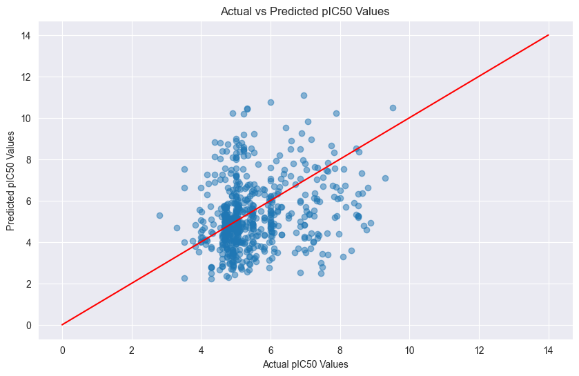

Neural Network Prediction#
import numpy as np
import pandas as pd
import matplotlib.pyplot as plt
from sklearn.model_selection import train_test_split
# read prepared data from previous notebooks
X = pd.read_csv('X.csv', index_col=0)
Y = pd.read_csv('Y.csv', index_col=0)
print(X.shape)
print(Y.shape)
(2985, 885)
(2985, 1)
Visualize X and Y dataset
X.head()
| mol_weight | log_p | num_h_donors | num_h_acceptors | PubchemFP0 | PubchemFP1 | PubchemFP2 | PubchemFP3 | PubchemFP4 | PubchemFP5 | ... | PubchemFP871 | PubchemFP872 | PubchemFP873 | PubchemFP874 | PubchemFP875 | PubchemFP876 | PubchemFP877 | PubchemFP878 | PubchemFP879 | PubchemFP880 | |
|---|---|---|---|---|---|---|---|---|---|---|---|---|---|---|---|---|---|---|---|---|---|
| 0 | 311.422 | 3.3188 | 1.0 | 2.0 | 1 | 1 | 1 | 0 | 0 | 0 | ... | 0 | 0 | 0 | 0 | 0 | 0 | 0 | 0 | 0 | 0 |
| 1 | 299.461 | 3.2412 | 1.0 | 3.0 | 1 | 1 | 1 | 0 | 0 | 0 | ... | 0 | 0 | 0 | 0 | 0 | 0 | 0 | 0 | 0 | 0 |
| 2 | 311.422 | 3.3188 | 1.0 | 2.0 | 1 | 1 | 1 | 0 | 0 | 0 | ... | 0 | 0 | 0 | 0 | 0 | 0 | 0 | 0 | 0 | 0 |
| 3 | 327.877 | 3.8331 | 1.0 | 2.0 | 1 | 1 | 1 | 0 | 0 | 0 | ... | 0 | 0 | 0 | 0 | 0 | 0 | 0 | 0 | 0 | 0 |
| 4 | 372.328 | 3.9422 | 1.0 | 2.0 | 1 | 1 | 1 | 0 | 0 | 0 | ... | 0 | 0 | 0 | 0 | 0 | 0 | 0 | 0 | 0 | 0 |
5 rows × 885 columns
Y.head()
| pIC50 | |
|---|---|
| 0 | 5.301030 |
| 1 | 5.568636 |
| 2 | 5.744727 |
| 3 | 4.958607 |
| 4 | 5.000000 |
Building Neural Network#
Train Test Split Splitting the dataset into training and test sets.
# Get 80% of the dataset as the training set. Put the remaining 20% as the test set: x_test and y_test.
x_train, x_test, y_train, y_test = train_test_split(X, Y, test_size = 0.2, random_state = 1)
# Transpose the dataset
x_train = np.array(x_train.T)
x_test = np.array(x_test.T)
y_train =np.array(y_train.T)
y_test = np.array(y_test.T)
# Every column is one sample of chemical compound with a dimension of 885
# There are in total 2388 training samples
print(x_train.shape)
print(y_train.shape)
(885, 2388)
(1, 2388)
Forward Propagation#
def forward_prop(X, W1, B1, W2, B2, W3, B3, W4, B4, dropout_rate=0.2):
Z1 = np.dot(W1, X) + B1
A1 = ReLU(Z1)
A1 = np.random.binomial(1, 1-dropout_rate, A1.shape) / (1-dropout_rate) * A1
Z2 = np.dot(W2, A1) + B2
A2 = ReLU(Z2)
A2 = np.random.binomial(1, 1-dropout_rate, A2.shape) / (1-dropout_rate) * A2
Z3 = np.dot(W3, A2) + B3
A3 = ReLU(Z3)
A3 = np.random.binomial(1, 1-dropout_rate, A3.shape) / (1-dropout_rate) * A3
Z4 = np.dot(W4, A3) + B4
A4 = Z4 # linear activation
return Z1, A1, Z2, A2, Z3, A3, Z4, A4
Model Dimensions#
\[\begin{split}
\begin{align*}
W1 & : 600 \times 885 \\
X & : 885 \times 2388 \\
B1 & : 600 \times 1 \\
Z1 & : 600 \times 2388 \\
A1 & : 600 \times 2388 \\
W2 & : 400 \times 600 \\
B2 & : 400 \times 1 \\
Z2 & : 400 \times 2388 \\
A2 & : 400 \times 2388 \\
W3 & : 64 \times 400 \\
B3 & : 64 \times 1 \\
Z3 & : 64 \times 2388 \\
A3 & : 64 \times 2388 \\
W4 & : 1 \times 64 \\
B4 & : 1 \times 64 \\
Z4 & : 1 \times 2388 \\
A4 & : 1 \times 2388 \\
Y & : 1 \times 2388 \\
\end{align*}
\end{split}\]
Forward Propagation:#
\[\begin{split}
\begin{align*}
Z1 & = W1 \times X + B1 \\
A1 & = \text{ReLU}(Z1) \\
A1 & = \text{Dropout}(A1, \text{rate} = p) \\
Z2 & = W2 \times A1 + B2 \\
A2 & = \text{ReLU}(Z2) \\
A2 & = \text{Dropout}(A2, \text{rate} = p) \\
Z3 & = W3 \times A2 + B3 \\
A3 & = \text{ReLU}(Z3) \\
A3 & = \text{Dropout}(A3, \text{rate} = p) \\
Z4 & = W4 \times A3 + B4 \\
A4 & = Z4 \\
\end{align*}
\end{split}\]
Loss Function (MSE) and Back Propagation#
\[
\text{Loss}(A4, Y) = \frac{1}{2 \times 2388} \sum_{i=1}^{2388} (A4 - Y)^2
\]
Gradients:
\[\begin{split}
\begin{align*}
dZ4 & = A4 - Y \\
dW4 & = \frac{1}{m} dZ4 \times A3^T \\
dB4 & = \frac{1}{m} \sum_{i=1}^{2388} dZ4_i \\
dA3 & = W4^T \times dZ4 \\
dZ3 & = dA3 \times \text{dReLU}(Z3) \\
dW3 & = \frac{1}{m} dZ3 \times A2^T \\
dB3 & = \frac{1}{m} \sum_{i=1}^{2388} dZ3_i \\
dA2 & = W3^T \times dZ3 \\
dZ2 & = dA2 \times \text{dReLU}(Z2) \\
dW2 & = \frac{1}{m} dZ2 \times A1^T \\
dB2 & = \frac{1}{m} \sum_{i=1}^{2388} dZ2_i \\
dA1 & = W2^T \times dZ2 \\
dZ1 & = dA1 \times \text{dReLU}(Z1) \\
dW1 & = \frac{1}{m} dZ1 \times X^T \\
dB1 & = \frac{1}{m} \sum_{i=1}^{2388} dZ1_i \\
\end{align*}
\end{split}\]
Define derivative of ReLU and back prop#
def deriv_ReLU(Z):
return Z > 0
def back_prop(X, Y, Z1, A1, Z2, A2, Z3, A3, Z4, A4, W2, W3, W4):
m = X.shape[1]
# Output layer gradients
dZ4 = A4 - Y
dW4 = (1 / m) * np.dot(dZ4, A3.T)
dB4 = (1 / m) * np.sum(dZ4, axis=1, keepdims=True)
# Third hidden layer gradients
dA3 = np.dot(W4.T, dZ4)
dZ3 = dA3 * deriv_ReLU(Z3)
dW3 = (1 / m) * np.dot(dZ3, A2.T)
dB3 = (1 / m) * np.sum(dZ3, axis=1, keepdims=True)
# Second hidden layer gradients
dA2 = np.dot(W3.T, dZ3)
dZ2 = dA2 * deriv_ReLU(Z2)
dW2 = (1 / m) * np.dot(dZ2, A1.T)
dB2 = (1 / m) * np.sum(dZ2, axis=1, keepdims=True)
# First hidden layer gradients
dA1 = np.dot(W2.T, dZ2)
dZ1 = dA1 * deriv_ReLU(Z1)
dW1 = (1 / m) * np.dot(dZ1, X.T)
dB1 = (1 / m) * np.sum(dZ1, axis=1, keepdims=True)
return dW1, dB1, dW2, dB2, dW3, dB3, dW4, dB4
Define loss function#
def compute_loss(Y, A2):
m = Y.shape[1]
loss = (1 / (2 * m)) * np.sum((A2 - Y) ** 2)
return loss
Define Gradient descent to update parameters#
def update_parameters(W1, B1, W2, B2, W3, B3, W4, B4, dW1, dB1, dW2, dB2, dW3, dB3, dW4, dB4, learning_rate):
W1 -= learning_rate * dW1
B1 -= learning_rate * dB1
W2 -= learning_rate * dW2
B2 -= learning_rate * dB2
W3 -= learning_rate * dW3
B3 -= learning_rate * dB3
W4 -= learning_rate * dW4
B4 -= learning_rate * dB4
return W1, B1, W2, B2, W3, B3, W4, B4
Define Training loop#
def train(X, Y, learning_rate=0.0001, epochs=1000):
W1, B1, W2, B2, W3, B3, W4, B4 = init_param(input_size, hidden_size_1, hidden_size_2, hidden_size_3, output_size)
loss_history = []
for epoch in range(epochs):
Z1, A1, Z2, A2, Z3, A3, Z4, A4 = forward_prop(X, W1, B1, W2, B2, W3, B3, W4, B4)
loss = compute_loss(Y, A4)
loss_history.append(loss)
dW1, dB1, dW2, dB2, dW3, dB3, dW4, dB4 = back_prop(X, Y, Z1, A1, Z2, A2, Z3, A3, Z4, A4, W2, W3, W4)
W1, B1, W2, B2, W3, B3, W4, B4 = update_parameters(W1, B1, W2, B2, W3, B3, W4, B4, dW1, dB1, dW2, dB2, dW3, dB3, dW4, dB4, learning_rate)
if epoch % 200 == 0:
print(f'Epoch {epoch}, Loss: {loss}')
return W1, B1, W2, B2, W3, B3, W4, B4, loss_history
Starts training#
trained_W1, trained_B1, trained_W2, trained_B2, trained_W3, trained_B3, trained_W4, trained_B4, loss_history = train(x_train, y_train)
Epoch 0, Loss: 15.845996172102879
Epoch 200, Loss: 2.1243727814427515
---------------------------------------------------------------------------
KeyboardInterrupt Traceback (most recent call last)
Cell In[14], line 1
----> 1 trained_W1, trained_B1, trained_W2, trained_B2, trained_W3, trained_B3, trained_W4, trained_B4, loss_history = train(x_train, y_train)
Cell In[13], line 6, in train(X, Y, learning_rate, epochs)
3 loss_history = []
5 for epoch in range(epochs):
----> 6 Z1, A1, Z2, A2, Z3, A3, Z4, A4 = forward_prop(X, W1, B1, W2, B2, W3, B3, W4, B4)
7 loss = compute_loss(Y, A4)
8 loss_history.append(loss)
Cell In[9], line 2, in forward_prop(X, W1, B1, W2, B2, W3, B3, W4, B4, dropout_rate)
1 def forward_prop(X, W1, B1, W2, B2, W3, B3, W4, B4, dropout_rate=0.2):
----> 2 Z1 = np.dot(W1, X) + B1
3 A1 = ReLU(Z1)
4 A1 = np.random.binomial(1, 1-dropout_rate, A1.shape) / (1-dropout_rate) * A1
KeyboardInterrupt:
Visualize the training loss#
plt.xlim(0, 1000)
plt.plot(loss_history)
[<matplotlib.lines.Line2D at 0x34f7d6ab0>]
With 1000 epoch of training, the loss on the training set is calculated#
Test the model on the test set
_, _, _, _, _, _, _, predicted_A4 = forward_prop(x_test, trained_W1, trained_B1,
trained_W2, trained_B2,
trained_W3, trained_B3,
trained_W4, trained_B4)
print(f"Prediction : {predicted_A4[0][:50]}")
print(f"Actual: {y_test[0][:50]}")
loss = compute_loss(y_test, predicted_A4)
print(f"loss : {loss}")
Prediction : [5.67441878 3.93759428 2.98048162 5.71251873 4.65941642 5.00502756
4.55637804 5.16805049 4.68073911 5.2589047 8.33572565 8.39572108
6.59195799 3.45574131 8.34154384 7.25741648 4.09029961 5.46717703
6.11046182 4.2934209 5.44595805 4.91091484 5.87084888 4.09632245
4.96049789 5.71407955 4.92102543 5.51453745 6.69418006 5.76432319
4.97153986 3.57833247 5.78778116 5.64127533 3.43861513 6.34171541
4.2264903 6.36843775 4.975339 4.18403529 6.62409373 2.74245139
5.56852651 4.78123253 4.67880814 5.32659743 5.3300072 6.52675987
4.1066085 7.77422227]
Actual: [6.32239305 5. 4.82073554 6.20065945 5.48148606 5.04575749
4.70114692 4.72746222 5.08249449 8.52287875 5.52287875 4.61618463
5.07572071 4.92481815 8.55284197 4.39794001 4.82102305 4.00674017
5.95860731 5.46852108 5.1948391 4.78914663 5. 4.09151498
4.85387196 4.2756422 4.69897 7.25289907 6.09691001 4.66134433
4.69897 5. 4.73873713 4.73873713 7.49485002 5.
4.60205999 7.26760624 6.86012091 5.05256628 8.79588002 5.14752001
3.95467702 6.07572071 3.30103 4.6476245 4.82419837 4.89962945
4.73165609 6.65757732]
loss : 1.499668979411229
Results#
With 597 samples in the test set, the total loss is around 1.2.
Plot the actual value vs the predicted value#
plt.figure(figsize=(10, 6))
plt.scatter(y_test, predicted_A4, alpha=0.5)
plt.xlabel('Actual pIC50 Values')
plt.ylabel('Predicted pIC50 Values')
plt.title('Actual vs Predicted pIC50 Values')
plt.plot(np.arange(15), color='red') # Line of equality
plt.show()
